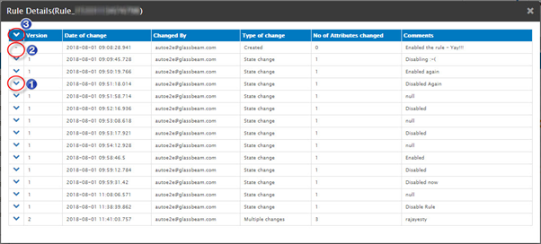
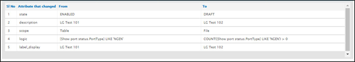
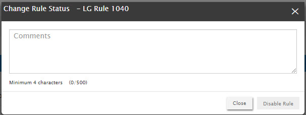

Rule change history
Purpose: Rule change history captures all the changes being done to the rule from the time of its creation. Each change is tagged as a new version and changes in each version is tracked.
Click on Rule change history in the rules list page.
On click, the rules history page is displayed.

- Click here to expand the respective entry in the rule change history to view the change details.
- When the No. Of attributes changed is zero, you cannot expand the entry in the rule change history.
- Click here to expand all the entries in the rule change history to view the change details.
Below is a screen shot of the expanded change details of an entry in the rule change history.

Every entry in the rule change history tracks the following parmeters:
|
Parameter |
Description |
|
Version |
Upon creation of a rule, the first version of the rule is created. A new rule version is created whenever you change any field in the edit rule page. |
|
Date of change |
Tracks the Date and time of: When the new rule is created AND When the parameters of the rule are changed for the current version |
|
Changed by |
Tracks the user id that makes changes to the status or other parameters of the rule. |
|
Type of change |
The type of change can be one of the following:
Click here to know more about the situations that cause these type of changes. |
|
No. Of attribute changes |
Tracks the number of attributes that have been changed. |
|
Comments |
Tracks your comments. When you change rule status between ‘Enabled’ and ‘Disabled’, you must enter comments.  |
The following table demonstrates the different types of change recorded in the rule change history and the impact of each of these changes.
|
Action |
Status |
Version |
|
Create New |
Draft |
1 |
|
Test Rule - Enable |
Enabled |
1 |
|
Change Attributes |
Draft |
2 |
|
Test Rule - Enable |
Enabled |
2 |
|
Disable |
Disabled |
2 |
|
Change Attributes |
Draft |
3 |
|
Test Rule - Enable |
Enabled |
3 |
The following table shows the types of change that are tracked in Rule Change History.
|
Action |
Type of change |
|
When the rule is first created and not enabled yet |
Created |
|
Change any rule attribute other than logic. |
Metadata change |
|
Change only logic of the rule. |
Logic change |
|
Any metadata change + Logic change. |
Multiple change |
|
Change between disabled and enabled state. |
State change |
|
More than one metadata change |
Multiple change |
The following table shows the tracking of rule change history after the rule is enabled for the first time.
|
Current rule status |
Type of change / Action |
What to expect |
|
Disabled |
Logic change / Multiple change/Metadata change (Involving any field in the list below) |
Rule moves to Draft state. Version is not incremented. |
|
Disabled |
Metadata change/Multiple change (Not involving any field in the list below) |
Rule remains in the Disabled state. |
|
Disabled |
State Change |
Rule moves to the Enabled state. Version is not incremented. |
|
Draft |
Logic change / Multiple change / metadata change |
Rule remains in the Draft state. When changes are saved multiple times – The changes get accumulated in the same rule version. |
|
Draft |
Test and Enable the rule |
The rule status changes to Enabled. Version number is not incremented. A new entry is not tracked for this action. |
|
Enabled |
Logic change |
Rule moves to Draft state |
|
Enabled |
Metadata change/Multiple change (Not involving any field in the list below) |
Rule remains in Enabled state. When changes are saved multiple times, new version is created for every save action. |
|
Enabled |
Metadata change/Multiple change (Involving any field in the list below) |
Rule moves to draft state. A new version of the rule is created. |
|
Enabled |
State change |
Rule moves to Disabled state. Version is not incremented. A new entry is created in the tracker. |
Note:
- When a rule is in version 1 and in draft status, version increment and change tracking do not happen unless the rule is enabled.
- List of fields that will cause change in the output or result of a rule are as follows:
- Label
- Email template
- API template
- Recommendation
- Justification
- Logic
- Text
- Scope
- Action
- For enabled/disabled rules - when Label, Text, Justification and Recommendation fields are edited and the newly edited or existing data in these fields involve attributes, the rule moves to Draft state upon save. Otherwise, the rules will remain in the same state as is.
Created with the Personal Edition of HelpNDoc: Easy to use tool to create HTML Help files and Help web sites